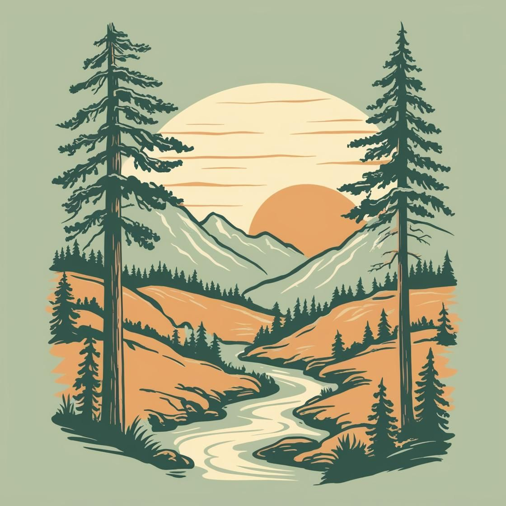

Founded in 1988 by avid rafter siblings, our company began as a small, passion-driven venture on the
Snake River. We quickly gained a reputation for our commitment to safety and deep local
knowledge. Over three decades, we've expanded our routes and expertise, but our core value remains
the same: sharing the excitement of the water with everyone.

Today, we run trips across multiple regions, constantly seeking out new challenges and breathtaking
scenery. Every year is a new chapter in our commitment to adventure, conservation and making
memorable trips for our guests.
Our Mission
We are dedicated to providing safe, thrilling, and unforgettable white water rafting experiences. Our
expert guides and commitment to conservation ensure you have the adventure of a lifetime while
respecting the beautiful rivers we explore.